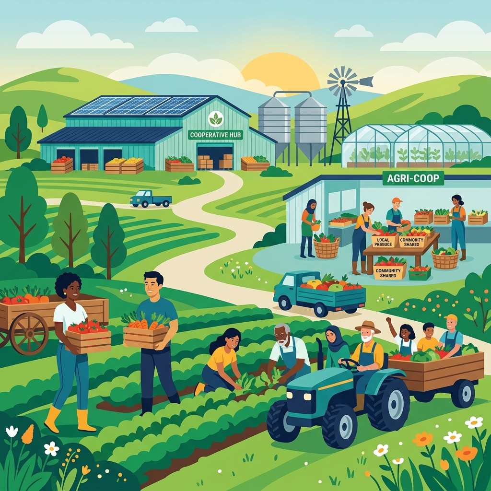
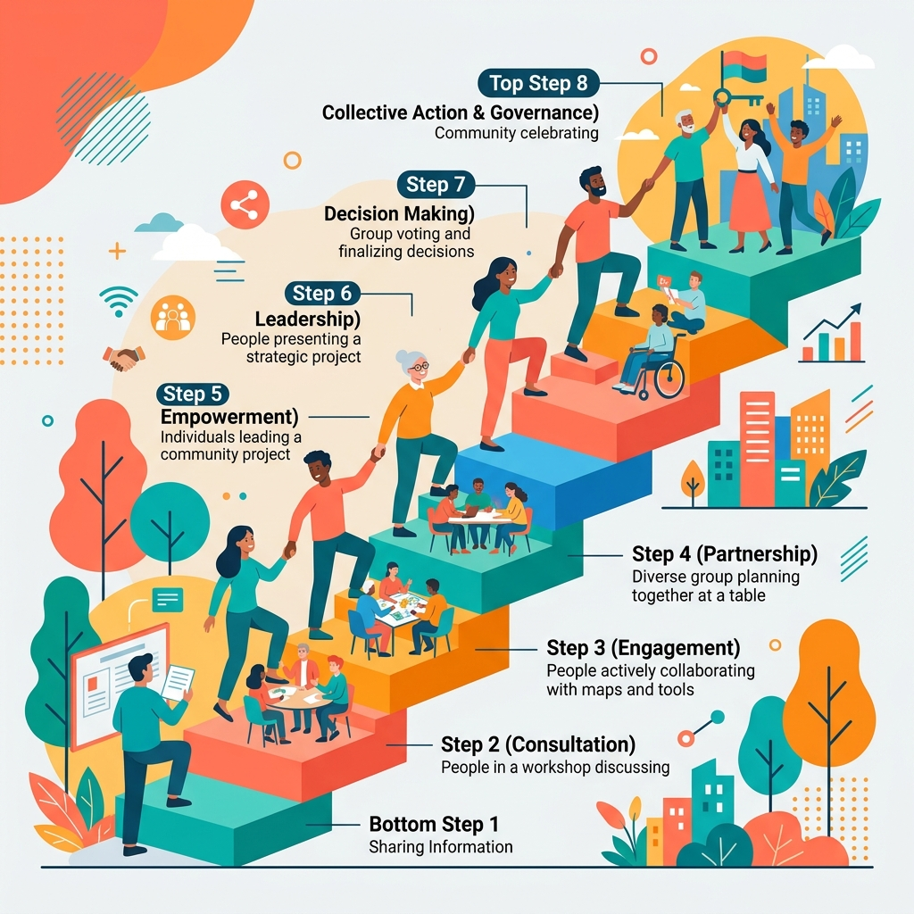
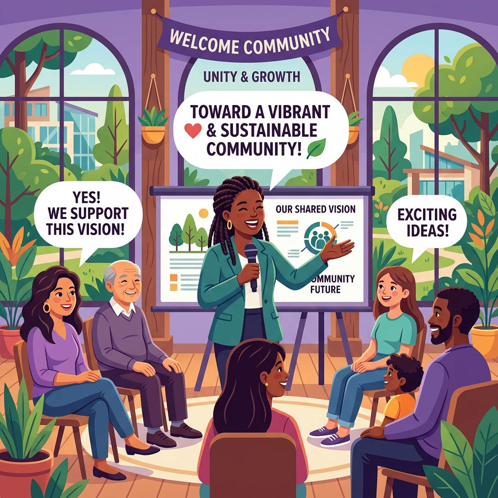

La movilización activa de las familias para responder colectivamente a las necesidades de su propia comunidad.
Presentación
La unión vecinal frente a las dificultades económicas
En este portafolio compartimos el trabajo desarrollado para la Actividad 11. Centramos nuestra mirada en la iniciativa "Huertos amigos de todos", nacida para hacer frente a la crisis de empleo en la agricultura tradicional que golpeó duramente a los hogares de una parroquia rural. A través de este análisis, exploramos cómo la organización comunitaria y el liderazgo transformador pueden reactivar la economía local, sembrar solidaridad y devolverle el protagonismo a la gente.
Un rol de servicio enfocado en escuchar, dar confianza y articular las capacidades y talentos del grupo.
Cuando el barrio o parroquia se adueña de su destino, organizando y gestionando de forma autónoma sus proyectos.
Recursos del proyecto
Materiales de la actividad

Análisis de caso
Caso de estudio: Huertos amigos de todos
Examina la respuesta de la comunidad rural frente al desempleo agrícola a través del cooperativismo de huertos familiares, detallando la participación ciudadana activa y el estilo de liderazgo transformador ejercido.
Abrir presentación en Canva
Participación ciudadana
Identificación de niveles de participación
Analiza en qué peldaño de la escala de participación se sitúa este caso de estudio y propone estrategias concretas para consolidar un empoderamiento familiar duradero.
Abrir presentación en Prezi
Análisis y Propuesta
Reflexión sobre liderazgo comunitario
Reflexiona sobre las habilidades socioemocionales necesarias para liderar en nuestros barrios y propone una iniciativa comunitaria práctica para involucrar a la juventud.
Ver reflexión interactiva
Fuentes base
Bibliografía
- Arnstein, S. R. (1969). A ladder of citizen participation. Journal of the American Institute of Planners, 35(4), 216-224. https://doi.org/10.1080/01944366908977225
- Montero, M. (2004). Introducción a la psicología comunitaria: Desarrollo, conceptos y procesos. Paidós. https://biblio.flacsoandes.edu.ec/catalog/shared/51296
- Organización de las Naciones Unidas para la Alimentación y la Agricultura [FAO]. (2020). Mitigación del impacto de la crisis en la agricultura familiar y sistemas de abastecimiento. FAO. https://doi.org/10.4060/ca9121es